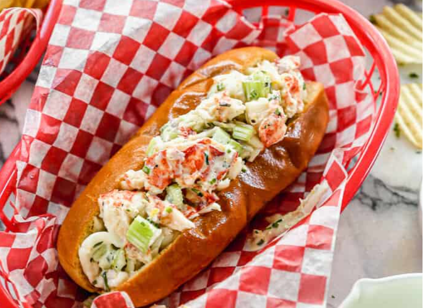

Rachel's Lobster with a Side of Lobster Roll

One cloud argue that Ross and Rachel are twin flames.
theisr on-and-of-again relations is a constant throuhtout the series.
the series. Leave it to Phoebe to be the psychic and predict the inevitable. When an
'80s home video surfaces of Rachel being stood up by her prom date and she realized that Ross stopped in to take her Rachel realizes their deep
feelings for each other and kisses him. "See!" Phoebe chimes in, "He's your lobster'
Ingredients
- 3 pounds large lobster claws, thawed if frozen
- Zest and juice of 1 small lemon
- 1/2 cup mayonnasie
- 2 tablespoons diced fresh tarragon
- 1/2 cup chives, minced and divided, plus more for serving
- 2 tablespoons Old Bay Seasons or dry rub seasoning for seafood
- Sweet Hawalian rools or brioche hot dog buns
- Butter
- Salt and pepper
Steps
- Heat a large pot of water on high. Once Boiling add the lobster claws
Boil until bright red about 12 minutes
- While the claws are boiling, create an ice bath by adding water and ice to a large
bowl. Remove the claws from the water when cooked and immediately place claws in the ice bath.
Let sit for 5 to 10 minutes until cool then crack the knuckles and remove the daw meet.
- In a large bowl mix together the claw meat, lemon juice and zest, mayonnasie, tarragon, chives and seasoning. Season with salt and pepper to taste.
- PLace a large pan over mediun-high heat. Split the Hawaiian rools or
hot dog buns and butter the inside then flatten. Place a flattened roll butter-side down in the pan and lightly toast
about 1 minute.
- To serve, scoop the lobter mixture into the roll and top with additional fresh chives
return to top
return to main page